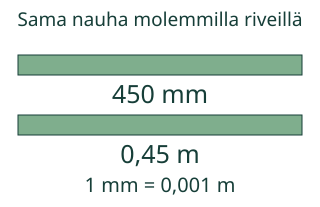
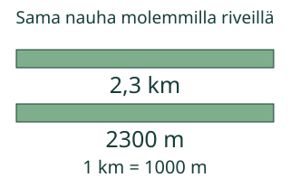

Loikka vaihtaa nauhan yksikön, ei sen pituutta.
Varmennan saman pituuden eri yksiköissä.
Pohdi ensin: Kasvaako nauha, kun senttimetrejä tulee enemmän?
Kaksi esimerkkiä ja uusi tilanne
Yksikkösuhde selittää muunnoksen
1 m = 100 cm, joten1,25 m = 1,25 × 100 cm = 125 cm. Lukuarvo kasvaa, koska senttimetri on pienempi yksikkö. Nauha ei pitene. Takaisin:125 cm : 100 = 1,25 m.
Ketju on km → hm → dam → m → dm → cm → mm. Joka askeleella pienempään yksikköön lukuarvo kerrotaan10:llä. Vastakkaiseen suuntaan se jaetaan10:llä. Kerroin saadaan yksikkösuhteesta.

Virheajatus: sama lukuarvo säilyy, kun vaihdetaan vain yksikön nimi. 1,25 cm on sata kertaa lyhyempi kuin1,25 m. Pituusyksikössä m ei ole toista eikä kolmatta potenssia: tässä ei muunneta pinta-alaa tai tilavuutta.

Kokeile itse
Voit vastata suoraan. Malli ja apu ovat valinnaisia; ei pakollista puhetta tai kuuntelua.
1,25 m = □ cm. Kirjoita tarkka lukuarvo, ei yksikköä.
Tarvitsen apua
1 m = 100 cm. Siksi metrimäärä kerrotaan100:lla senttimetreiksi. Isompaan yksikköön lukuarvo pienenee. Varmista muuntamalla takaisin. Sama suhde koskee myös desimaalia ja nollaa.
Avun kanssa tehty vastaus on tuettua harjoittelua. Voit avata esimerkin ja jatkaa samaa tavoitetta.
Kokeile omaa pituutta
Ei-negatiivinen määrä0…1 000 000. Desimaali tai murtoluku; vain alla olevat pituusyksiköt.
Lisätutkimus ja opettajalle
Muuntaa ja varmentaa saman pituuden km…mm-yksiköissä kertomalla tai jakamalla tarkalla yksikkösuhteella; säilyttää suureen ja tarkistaa takaisin.
Luokat 7–9. Kanoninen rooli atomic. Pakolliset esitiedot säilyvät graafista: kaikki nimetyt taidot tarvitaan. Vahva tuki ei ole lisäportti. Yksikköketju ja yhden yksikön suhde ovat saatavilla. Murtoluku on valinnainen lisätehtävä; samaa pituutta ei korvata helpommalla suureella.
Mittaa sama nauha metreinä ja senttimetreinä. Kirjaa lukuarvo ja yksikkö yhdessä ja varmista muunnos takaisin. Ruutumalli ei osoita, että oppija osaisi asettaa mittanauhan oikein tai tehdä oikean mittauksen.
Vain pituusyksiköt km, hm, dam, m, dm, cm ja mm. Oma muunnos hyväksyy lähtöarvon0…1 000 000: desimaalissa enintään9 desimaalipaikkaa tai tarkka murtoluku, enintään18 numeroa osoittajassa ja nimittäjässä. Ei pyöristettyä likiarvoa, laskulauseketta, pinta-alaa tai tilavuutta.
Paikallinen vastaus ei osoita itsenäistä, viivästettyä tai formaalia hallintaa. Kokeilujen lukumäärä tai mallin käyttö ei ansaitse hallintaa. Ei henkilöhistoriaa, tallennusta tai oppijaseurantaa. Ihmis-/oppilas-/vaikuttavuus-/täyden manuaalisen saavutettavuuden ja julkaisun hyväksyntää ei ole tehty.
Lopuksi: Miksi450mm on0,45m eikä45m? Millä takaisinmuunnoksella varmistat vastauksen?